This manual walks through Daily one task at a time. The first part is for the field (on the phone); the second, for the office (on the computer). Screen names, buttons and messages are written exactly as they appear in KORbuild, in bold.
Before you start
Daily opens in the area of your role: the field starts on Today, the office on the Dashboard. On the phone, the menu is at the bottom of the screen; on the computer, on the left. If you do not see a screen described here, your role does not include it — see Roles and permissions.
Field: see what is due today
What it is for: knowing, at a glance, which reports you owe and which ones the office sent back.
Who can do it
Anyone who fills out daily reports (default role: Foreman).
- Open KORbuild and tap Daily on the modules screen. It opens on Today.
- Read the boxes at the top, from most to least urgent:
- red — late report: a past workday without a report. Tap the job to fill it out now.
- yellow — today's report is missing: jobs without today's report, with the deadline and the time left (for example, Due: today at 6 PM · 1h30 left).
- red — the office requested changes: a report sent back, with the reason in quotes. Tap Fix now →.
- Below, Your jobs lists each job with the status of today's report.

The number on the Today tab (and on the app icon, where the phone allows it) is the total of pending items: late days, jobs without today's report and requests for changes.
Field: fill out the daily report
What it is for: recording the day on the job: weather, crew, equipment, what was done, what got in the way, and photos.
Who can do it
The person responsible for the job's report, or anyone with Fill out daily reports (default role: Foreman).
- On Today, tap the job. The job screen shows the date, the deadline and the previous reports.
-
Tap New daily report to start blank, or or copy from a previous report to start from another day (see Copy a previous report).
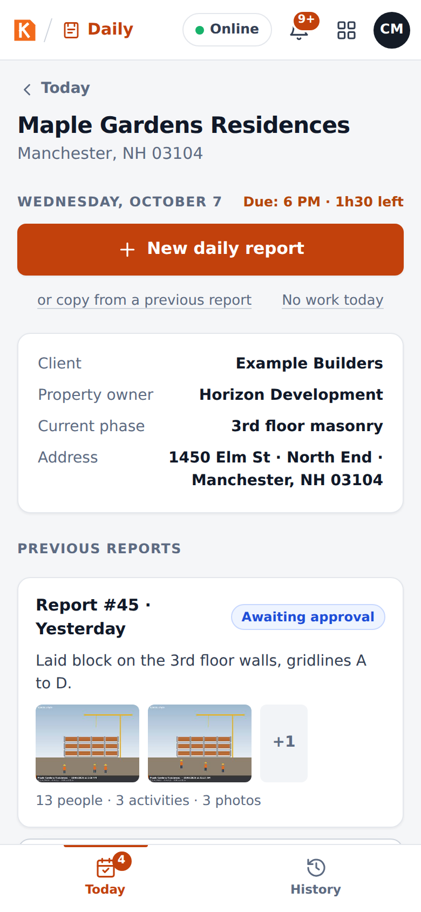
The job screen: start a new report, copy a previous one or log no work today -
The report opens. At the top, the progress chips (Weather, Crew, Work performed, Photos) turn green as each part is complete. Fill out the sections below in any order.
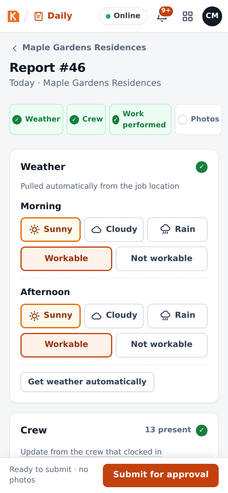
The top of the report, with the progress chips
Weather
The weather is pulled automatically from the job location for the morning (7 AM–12 PM) and the afternoon (1 PM–5 PM). With more than 2 mm of rain in a period, that period is marked Not workable.
- Check or correct each period: Sunny, Cloudy or Rain, and Workable or Not workable.
- Get weather automatically fetches it again (it needs signal).
- The report says whether the weather was automatic, adjusted by hand or entered by hand.
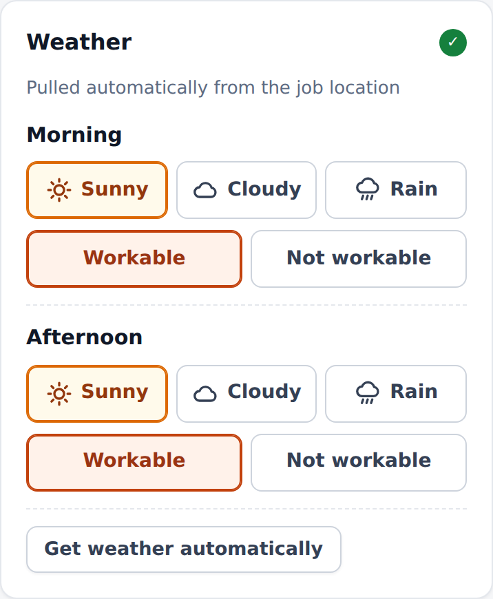
Crew
- Tap the trades (+ Mason, + Laborer, + Carpenter…) to add them, then use − and + to set how many were Present and Absent.
- A trade that is not in the list: type it in Other trade and tap Add.
- Update from the crew that clocked in fills the crew from the people who clocked in on this job today in Crew (the time clock).
- The section shows the total present (for example, 13 present).
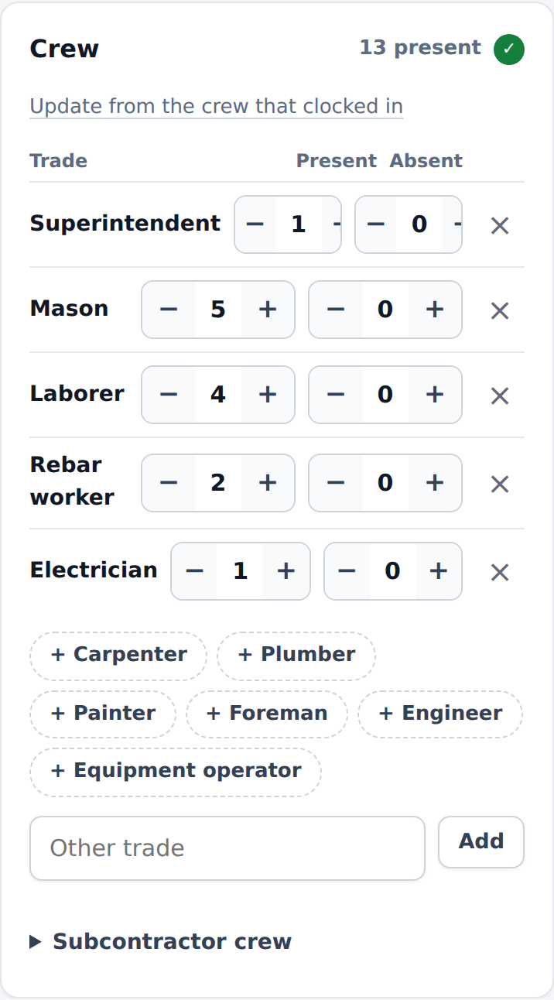
Equipment
Add the equipment on site with its quantity and status: Running, Idle or Under maintenance.
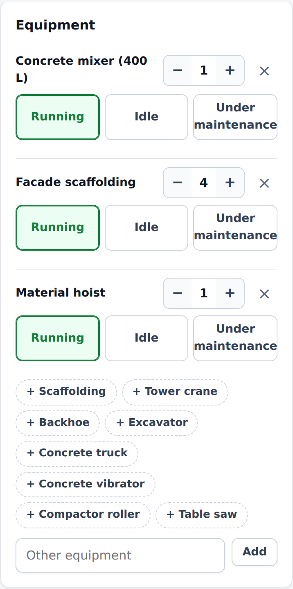
Work performed
Each activity has:
| Field | What to enter |
|---|---|
| Description | What was done. Example: poured the 2nd floor slab, 60 cu yd. |
| Location / phase | Where on the job (floor, building, area). |
| Status | In progress or Completed. |
| Schedule task and % complete | Only when the job has a schedule: the task this activity advanced and how far it is now. The schedule is updated when the office approves the report. |
- Dictate: speak instead of typing (uses the phone's voice recognition).
- Improve text: rewrites what you typed or dictated in clear, technical language. A window shows the before and after; tap Use this text to keep it.
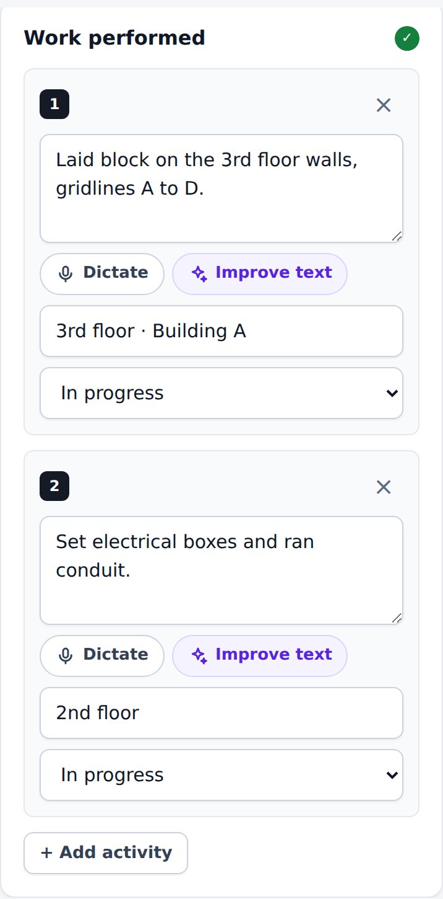
In the prototype
Improve text is simulated with simple rules on the phone. In the product it will use AI, and the original text is kept alongside.
Issues & delays
Anything that got in the way of the day: tap the type (Material / delivery, Rain, Equipment, Safety / accident, Crew / absences, Visit / inspection, Design / conflict, Other) and describe what happened and the impact.
Why it matters
This is the section that protects the contractor in a delay claim: rain that stopped the pour, a late delivery, an inspection that did not show up — recorded on the day it happened.
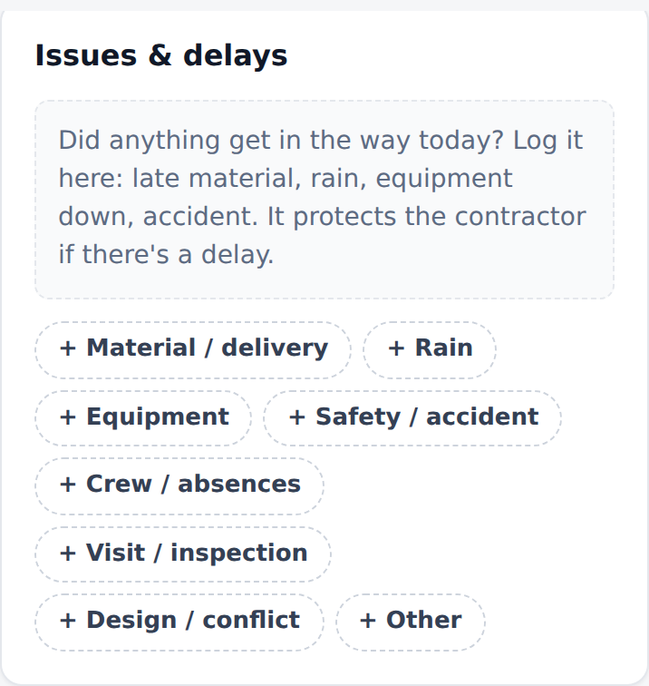
Photos
- Take photo opens the camera; From gallery picks existing photos.
- Each photo gets a stamp inside the image with the job, date, time and GPS coordinates, and is reduced on the phone (for example, 4.2 MB becomes about 300 KB) so it uploads fast even on a weak signal.
- Add a caption to each photo (for example, rebar before the pour).
- If the phone has no GPS, the job's location is used, and the stamp says so.
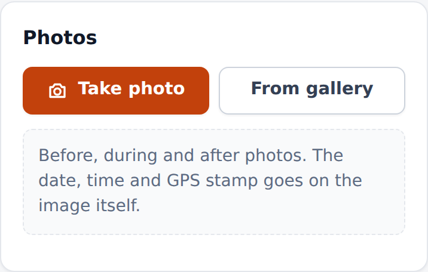
Submit
The bar at the bottom says what is still missing — for example, Missing: at least one person in manpower, at least one activity described — or that the report is ready. Then tap Submit for approval.
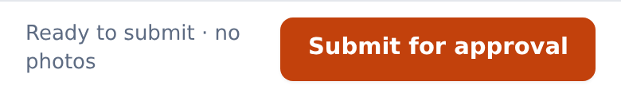
A report needs, at least: the weather of the morning and of the afternoon, one person in the crew and one activity described. Without photos, KORbuild asks before submitting:
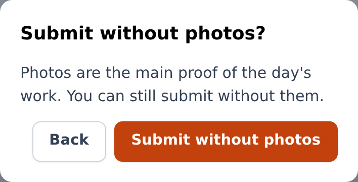
Everything you type is saved on the phone as you go, even without signal. You can leave the report and come back later.
Copy a previous report
What it is for: most days look like the day before. Copying saves typing.
- On the job screen, tap or copy from a previous report.
- Choose the report to copy from (the most recent comes selected) and tap Copy.
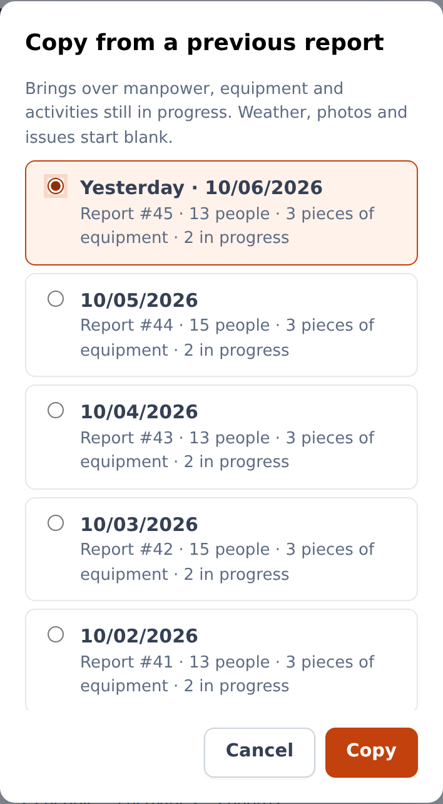
The new report brings the crew (with absences reset to zero), the equipment and the activities still in progress. Weather, photos and issues are not copied: they belong to the day.
Log "no work today"
What it is for: a workday without work on the job (rain, holiday, job on hold) still needs a record — it justifies the day and stops the reminders.
- On the job screen, tap No work today.
- Choose the reason: Rain / unworkable weather, Holiday or day off, Job put on hold by the client, Material shortage, Strike or work stoppage or Other reason, and add a note if you want.
- Tap Log it.
The day is recorded as that day's report, it goes to the office and the reminders for that day stop.
Fill out a late report
If a past workday has no report, it appears in the red late report box on Today (up to the last 3 workdays). Tap it and fill out the report as usual — you can also copy from a previous one.
A report submitted after the deadline is accepted, but it is marked Submitted late in the report and in the PDF, with the date and time of the first submission and the deadline it missed.
Fix a report the office sent back
- On Today, the red box The office requested changes to report #… shows the job, the date and the reason, in quotes.
- Tap Fix now →. The report opens with the request at the top.
- Make the changes and tap Resubmit.
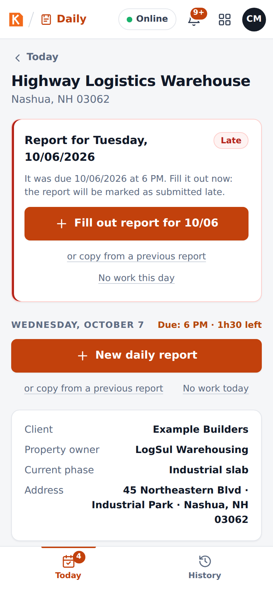
A resubmission after a request for changes does not count as late: what counts is the first submission.
Work without signal
Nothing special to do: KORbuild works offline.
- While you fill out the report, everything is saved on the phone.
- If you submit without signal, the report is Saved on this device and waits in a queue. As soon as the connection comes back, it uploads by itself, photo by photo, and the office receives it.
- After the first visit, the whole app opens without internet.
The indicator at the top of the screen (Online) shows the connection.
In the prototype
Tap Online to simulate losing the signal, and tap again to come back online.
See your reports (History)
History lists every report you filled out, newest first, with its status (Draft, Awaiting approval, Changes requested, Approved). Tap one to open it.
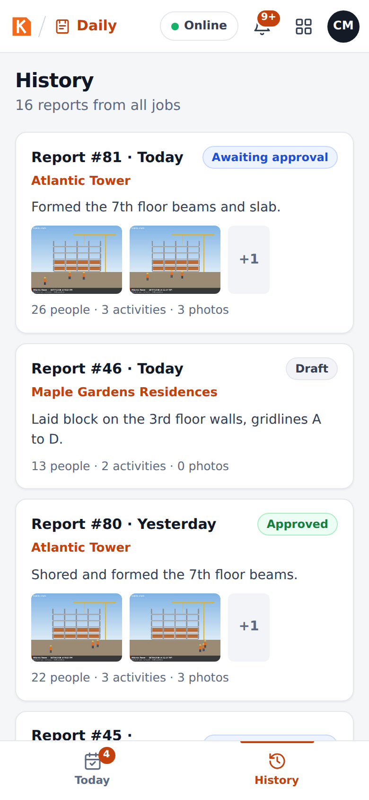
Office: follow the jobs on the Dashboard
What it is for: seeing, at a glance, which jobs reported today and what is waiting for you.
General contractor or subcontractor
The office screens are the same for both, but a general contractor sees every subcontractor on its jobs: one status light per subcontractor on each job, and the reports of all of them in the queue. A subcontractor sees its own reports; the ones on a general contractor's job wait for the general contractor to approve.
Who can do it
Anyone with View all jobs (default roles: Admin and Project manager).
The Dashboard shows:
- The numbers of the day: today's reports received, reports awaiting approval, jobs with late reports, photos received today.
- Jobs missing a report for the last workday, with the person responsible (shown from 8 AM on the next day).
- Job status, with a color for each job: green (on track: today's report received), yellow (1 day behind), red (2 or more days behind). Open goes to the job.
- Awaiting approval: the queue, with Review on each report.

Office: review and approve a report
Who can do it
Anyone with Approve reports and send to the client (default roles: Admin and Project manager) — at the general contractor of the job, or at the subcontractor when the job is directly with the owner.
-
Open Approvals (or Review on the Dashboard).
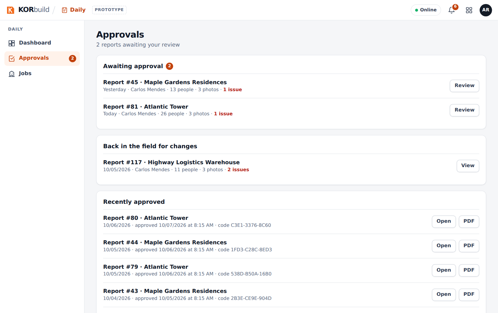
Approvals: the queue of reports -
The report opens exactly as the client will see it: job, client, prepared by, current phase, deadline, weather, manpower, equipment, work performed, issues, photos. On the right, the Review panel and the report's History (who started it, submitted it, when it arrived).
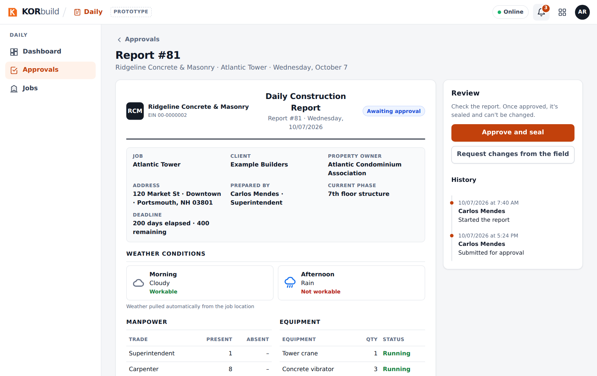
Reviewing a report -
Choose:
- Approve and seal — confirm in the window. The report is sealed: it receives a verification code and nobody can change it anymore.
- Request changes from the field — see the next task.
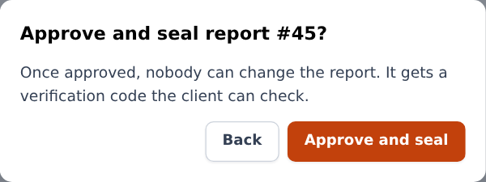
After the approval, the panel shows Approved and sealed, the verification code and the sharing options. The subcontractor's foreman sees the report approved, with who approved it and the company.
On a general contractor's job, the subcontractor's office sees the report but cannot approve it: the panel says With the general contractor.
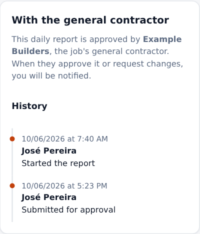
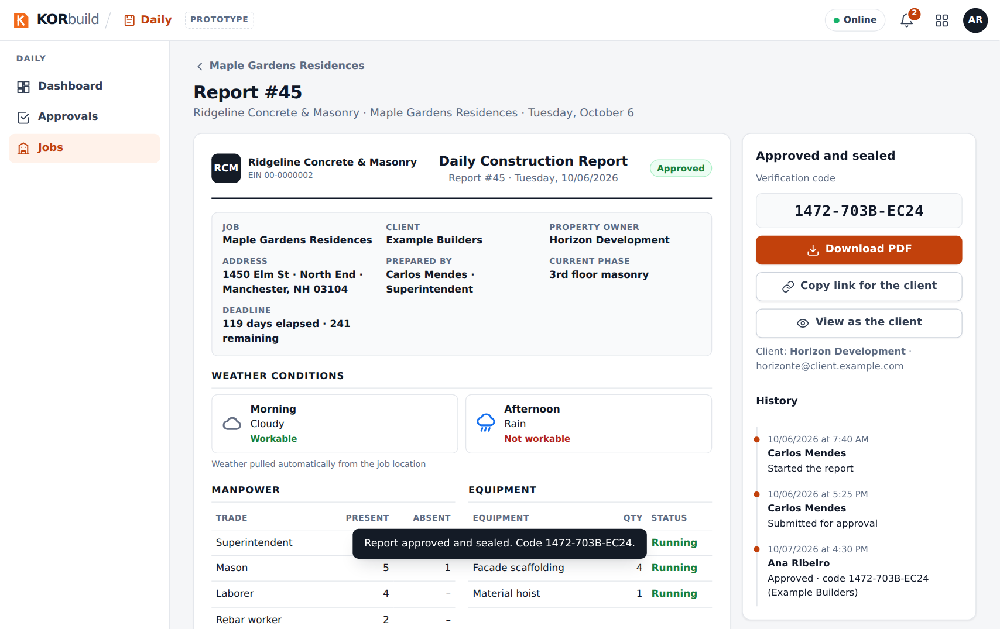
How the seal works
At approval, the whole content of the report — including a digital fingerprint of each photo — gets a fingerprint (SHA-256). Its first characters become the verification code. If anyone changes a word or a photo afterwards, the client's link shows that the document no longer matches what was approved.
Office: request changes from the field
- On the report, click Request changes from the field.
- In What needs to be fixed?, write the reason (for example, missing the photo of the rebar before the pour).
- Click Send request.
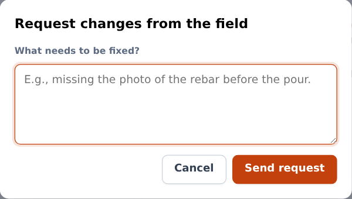
The report goes back to the field with the reason, and appears in red on the foreman's Today screen. When the foreman resubmits, the report comes back to your queue.
Office: share the report with the client
On an approved report:
- Copy link for the client — copies a link you can send by email or message. The client opens it in any browser, without an account.
- View as the client — opens that link, so you can see what the client sees.
- Download PDF — the report as a PDF, with the company logo, the job, the weather, the tables, the photos with captions, date and GPS, the seal and signatures.
The client's page checks the seal every time it opens. If the content matches what was approved, it shows Authentic document, with who approved it and when.

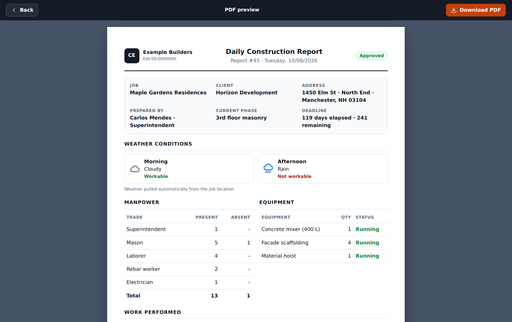
In the prototype
The PDF is printed from the browser (choose Save as PDF in the print window). In the product, it is generated on the server, ready to download. The client's link only works in the same browser, because the prototype has no server.
Office: follow a job
- Open Jobs: every active job with its status and the number of reports received.
-
Open a job: its address, client and parties, the Schedule card (when the job has a schedule), the daily report settings (person responsible, deadline, workdays) and every report received.
For a general contractor, the job shows instead Subcontractors on this job — for each subcontractor, who is on site now, who came in today, hours today and this week, and the list of people with trade, time in and hours (never dollar amounts) — the schedules published by the subcontractors and the reports received, grouped by subcontractor.

Subcontractors on a general contractor's job
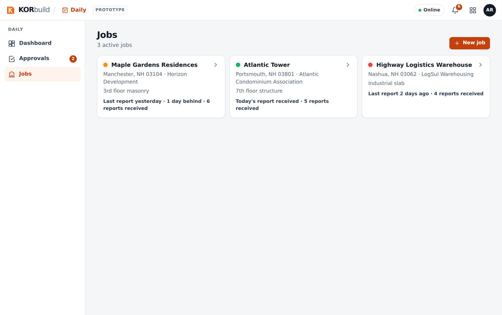
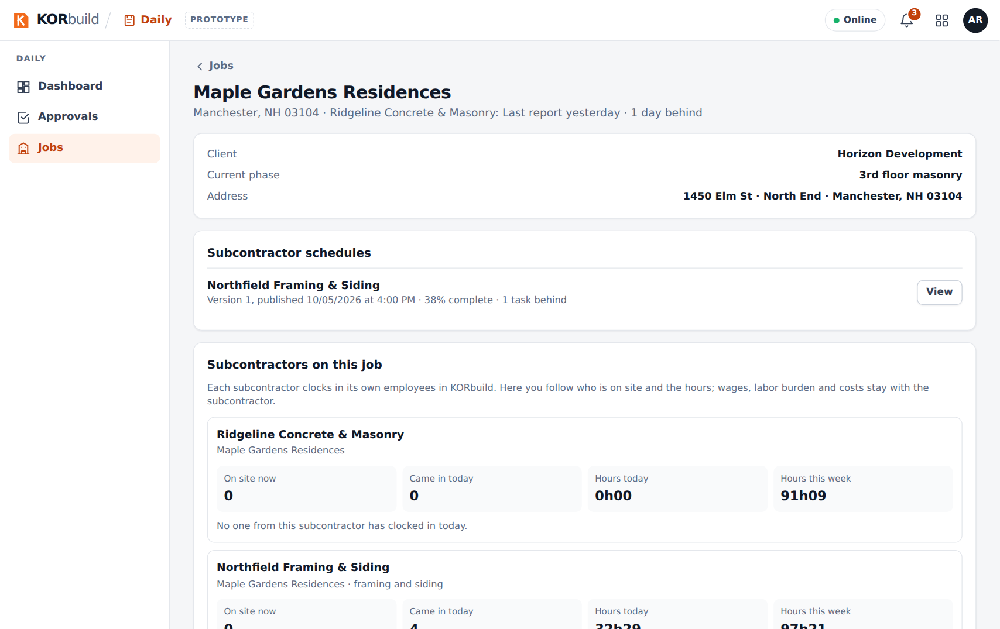
From the job, Edit job (for those who can manage jobs) opens the job setup: address, geofence, deadline, person responsible and workdays.
Notifications
The bell at the top of every screen gathers the alerts of all modules, with the number of unread ones and Mark all as read. For Daily:
| When | Who | Message |
|---|---|---|
| 4 PM | Person responsible for the job | Today's report is missing; due at 6 PM. |
| 6 PM | Person responsible for the job | Today's report is late. |
| 8 AM, next day | Office | Jobs with no report on the last workday, with the person responsible. |
| When it happens | Field | The office requested changes to a report. |
| When it happens | Field | Your report was approved. |
| When it happens | Office | A report is awaiting approval. |
| 8 AM, after a task's end date | Office | A schedule task is behind (when the job has a schedule). |
On the phone, the same reminders also arrive as phone notifications (when allowed). On Today, How do reminders work? Test on your phone shows the schedule and sends a real test notification.
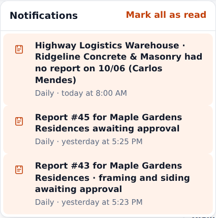
In the prototype
Reminders at 4 PM and 6 PM only fire while the app is open. In the product, the server sends them even with the app closed. There is no SMS or email for now.
Messages and alerts
| Message | Where | What to do |
|---|---|---|
| Missing: at least one person in manpower, at least one activity described | Bottom bar of the report | Fill in what is listed; the button submits once nothing is missing. |
| Submit without photos? | When submitting | Go Back and add photos, or Submit without photos. |
| A daily report is required for every workday. Fill it out now; it will be marked as submitted late. | Today, red box | Open the job and fill out the report. |
| Today's report is missing… Due: today at 6 PM | Today, yellow box | Fill out today's report or log No work today. |
| The office requested changes to report #… | Today, red box | Fix now →, change and Resubmit. |
| Saved on this device | Report status | Nothing: it uploads when the signal comes back. |
| Authentic document | Client's link | The report is exactly what was approved. |
| The client's link says the document does not match | Client's link | The content was changed after approval: contact the contractor. |